| 区域 | 张数 | 关键画面 | 够用吗 |
|---|---|---|---|
| 码头与登船 夜间港口：月亮、多船剪影、跳板与木栈道 | 3 | 港口全景 · 多船剪影 | 够 全景、跳板、楼梯三个机位齐全 |
| 上层甲板 船舷栏杆、吊车与吊货、救生圈 | 3 | 甲板 · 钢制舱壁与舷梯口 | 够 吊车、钢制舱壁、舷梯三个机位，船外空间关系清楚了 |
| 货舱 集装箱、麻袋、舱口与装卸平台 | 4 | 货舱 · 装卸区战斗 | 够 平视、仰视、战斗、装卸四种状态都有 |
| 船内主舱 卧铺、舷窗、书桌、长餐桌、红漆柜 | 4 | 主舱起点 · 卧铺区（干净版） | 够 补到干净的开局首屏，红条遮挡问题解决 |
| 机舱锅炉 管道、阀门、锅炉、楼梯 | 4 | 机舱前段 · 红柜与管道 | 够 锅炉、阀门组、斜梯、过渡段各一张 |
| 优先级 | 区域 | 要拍什么 | 为什么 |
|---|---|---|---|
| 可选 | 码头与登船 | 水面近景（贴近跳板下的水面，画面只留水和倒影） | 水面在国画里靠 石青/花青 波纹加留白，现在图里水面只占很细一条，看不出笔法层次。不影响重绘启动，什么时候顺手拍到都行。 |
| 项目 | 原因 | 结论 |
|---|---|---|
| 船体外观全景 | 游戏内每一屏都是局部视角，整条船无法一次入画。 | 不需要 —— 原生全景贴图（7000×1018）本来就包含整条船，比任何截图都完整。 |
| 驾驶室 / 舵轮 | 本关没有这一间。 | 已由你确认排除。`Wheelhouse_01` 这张贴图存在，但它是船体外观件，不是可进入的房间。 |
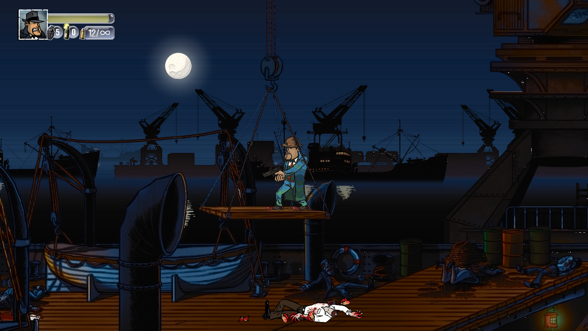
最有价值的一张：整条水平线的船队剪影、三台吊车、月亮。构图可直接作为 L3 天幕重绘的底稿。
01_dock/L3_01_dock_01_harbour_panorama.png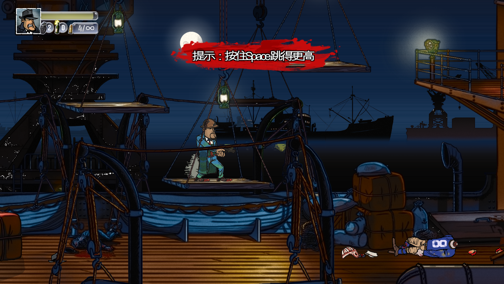
跳板与船舷的交界，水面色阶从深蓝到近黑。水面笔法的唯一参考。
01_dock/L3_01_dock_02_gangway_moon.png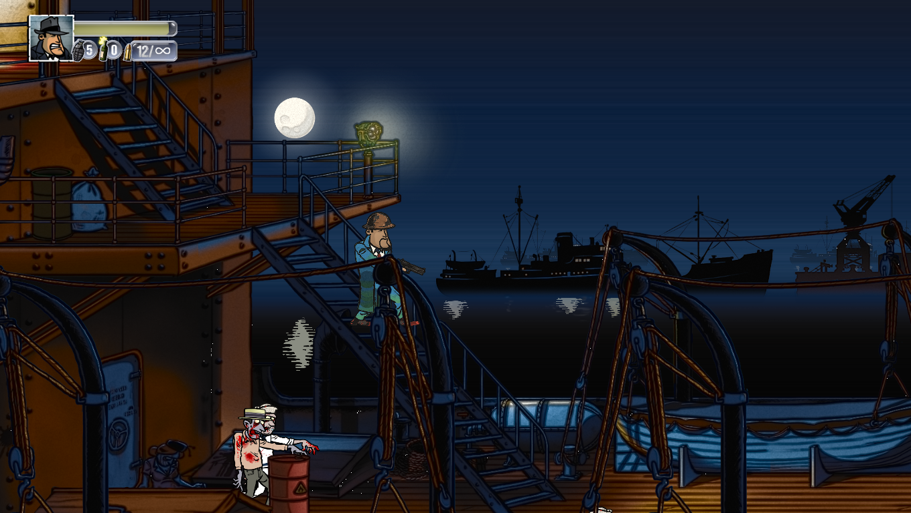
左侧钢梯与右侧船舷铆钉板，远景是第二层船队。纵深关系的参考。
01_dock/L3_01_dock_03_stairs_bulwark.png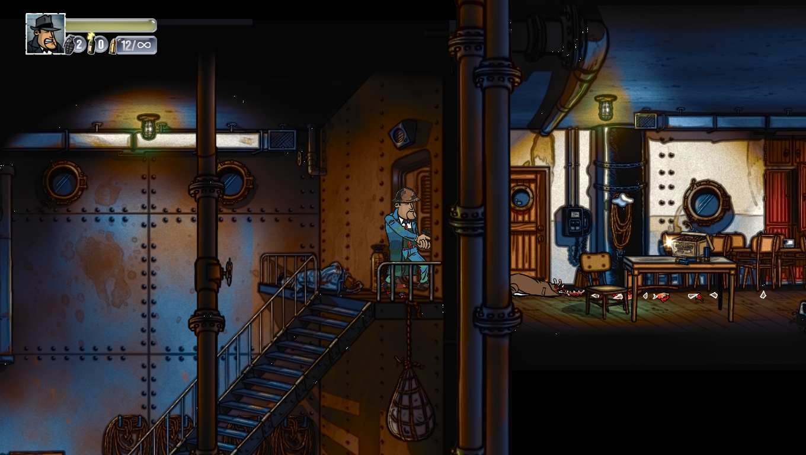
整面铆钉钢板、钢梯、右侧透出主舱。船内到船外的分界，材质对比最强。
02_deck/L3_02_deck_02_steelwall_stairs.png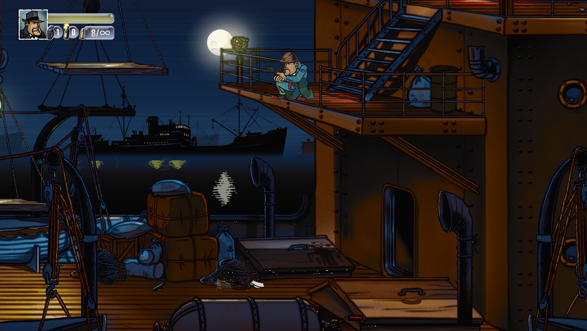
通往上层平台的钢梯、月亮、远处第二艘船、成堆木箱。船外空间关系的参考。
02_deck/L3_02_deck_03_gangway_moon.png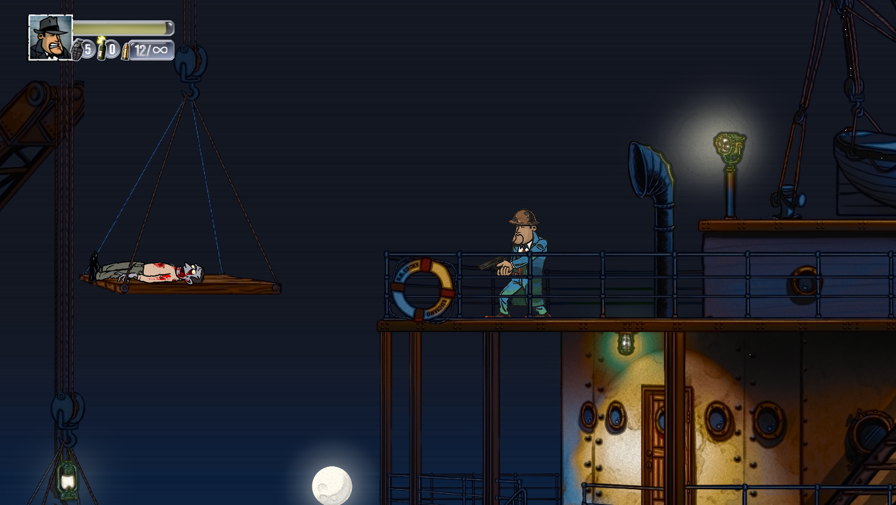
吊车吊起担架与尸体、救生圈、栏杆、下方月亮。吊索的线条最清楚的一张。
02_deck/L3_02_deck_01_crane_lifering.png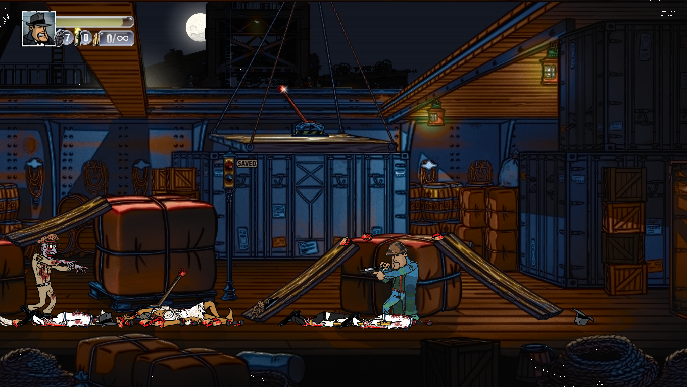
从舱内往外看，天窗透月光、红布麻袋、铁皮集装箱、斜撑木板，出怪状态。
03_cargo/L3_03_cargo_04_loading_combat.png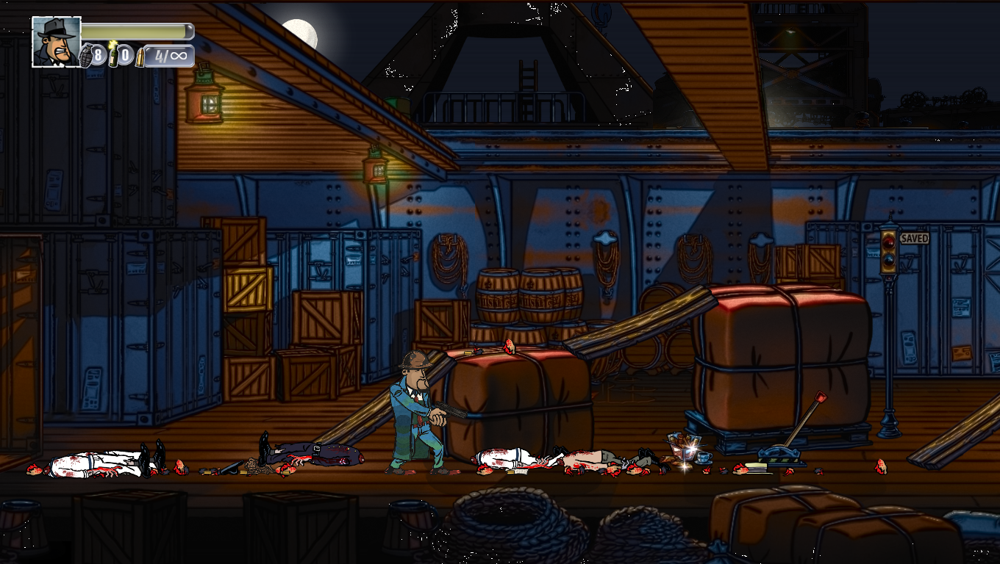
木箱、铁皮集装箱、红布麻袋、斜撑木板，构成 L3 的主体重复图案。
03_cargo/L3_03_cargo_01_containers.png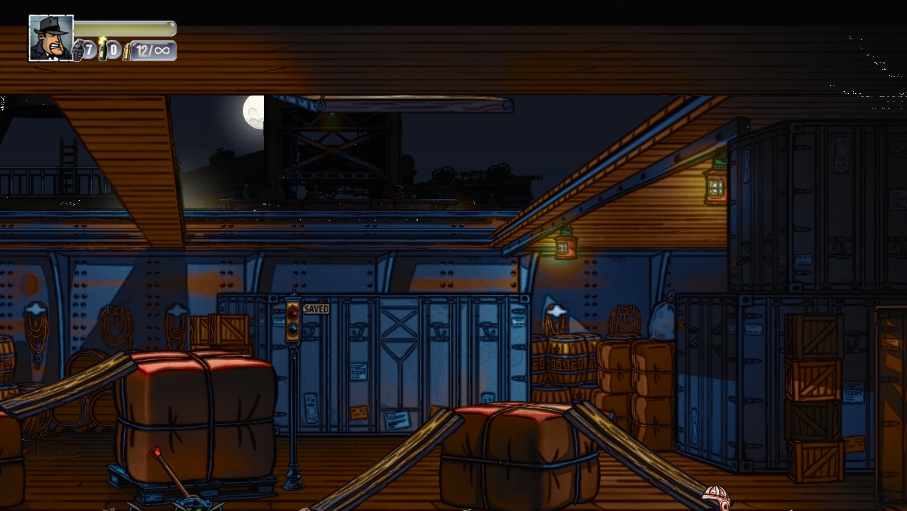
从舱内往上看月光透进舱口，是唯一一张逆光视角。
03_cargo/L3_03_cargo_02_hatch_lookup.png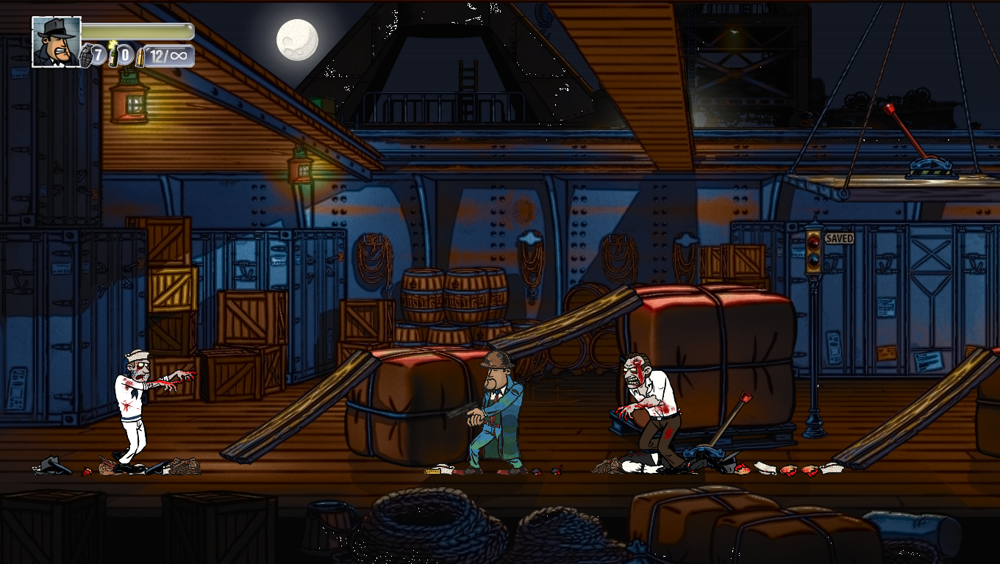
同一区域出怪状态，可确认角色在货舱暗部的可读性。
03_cargo/L3_03_cargo_03_combat.png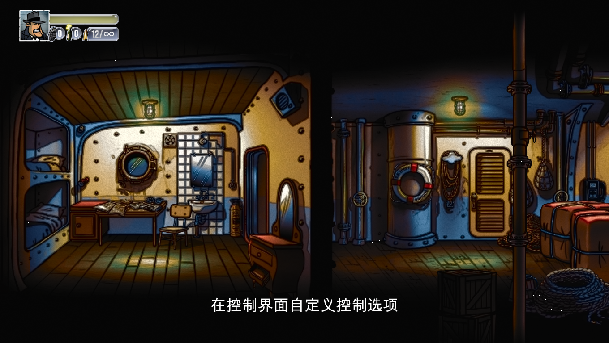
本关开局第一屏。无教程红条，卧铺、舷窗、书桌、海报墙完整可见，取代被遮挡的那张。
04_cabin/L3_04_cabin_03_start_clean.png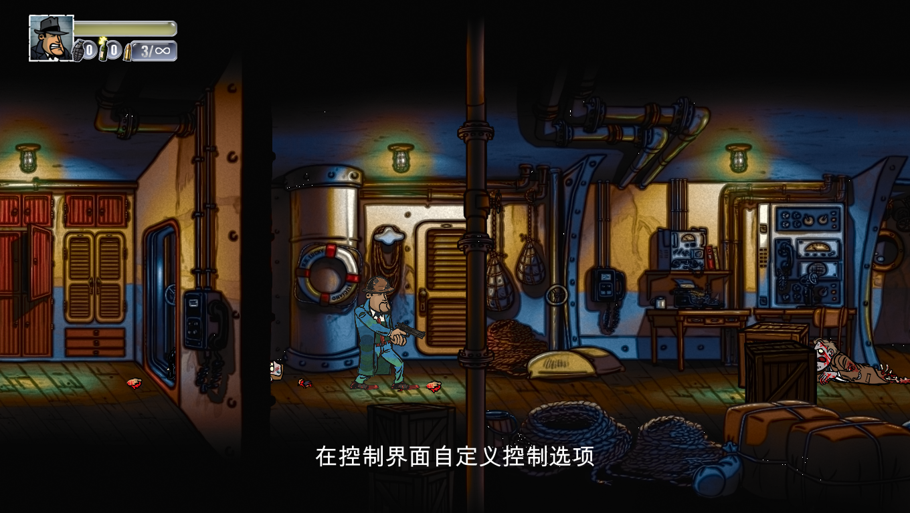
红漆储物柜、舷窗、控制台、盘绳。同一空间的血污状态。
04_cabin/L3_04_cabin_04_mess_body.png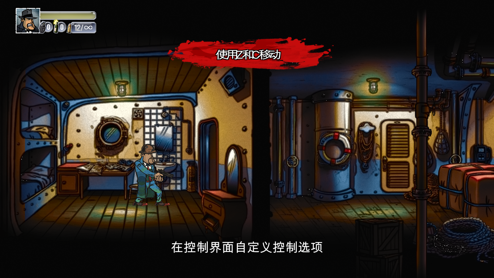
上下铺、舷窗、书桌、海报墙。顶部有教程红条遮挡天花板。
04_cabin/L3_04_cabin_01_bunks.png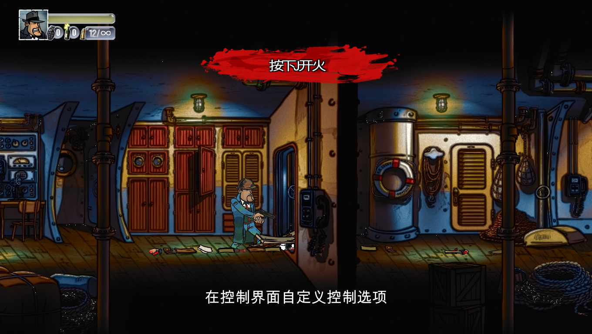
长桌、红漆储物柜、管道阀门。画面中央被教程条与大片血污遮挡。
04_cabin/L3_04_cabin_02_mess.png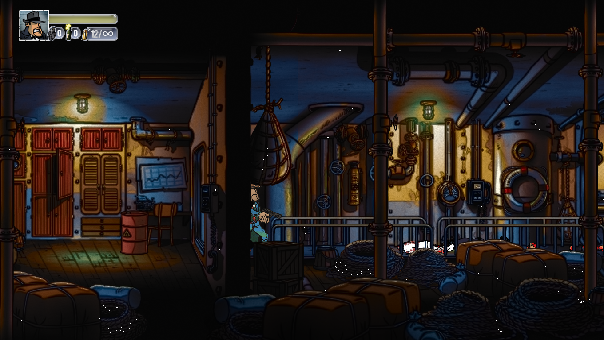
红漆柜、海图、成排管道、成堆麻袋。主舱到机舱的过渡段，两种材质的交界。
05_engine/L3_05_engine_03_corridor.png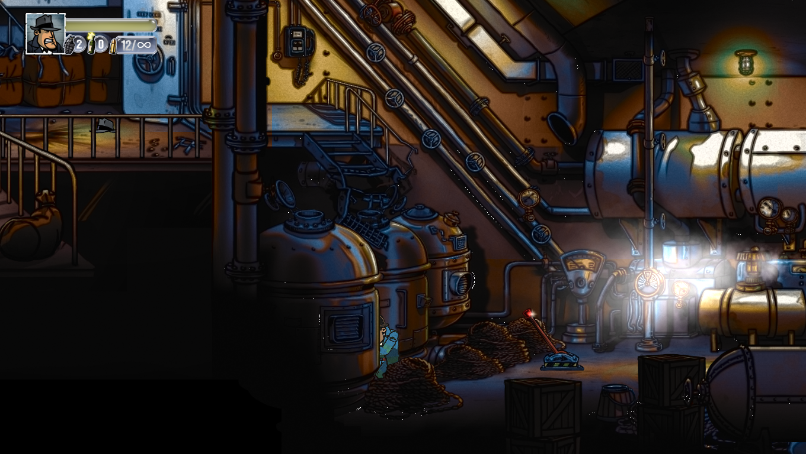
三台卧式锅炉、巨大的斜向梯架、黄铜阀门。金属反光最集中的一张。
05_engine/L3_05_engine_04_boilers.png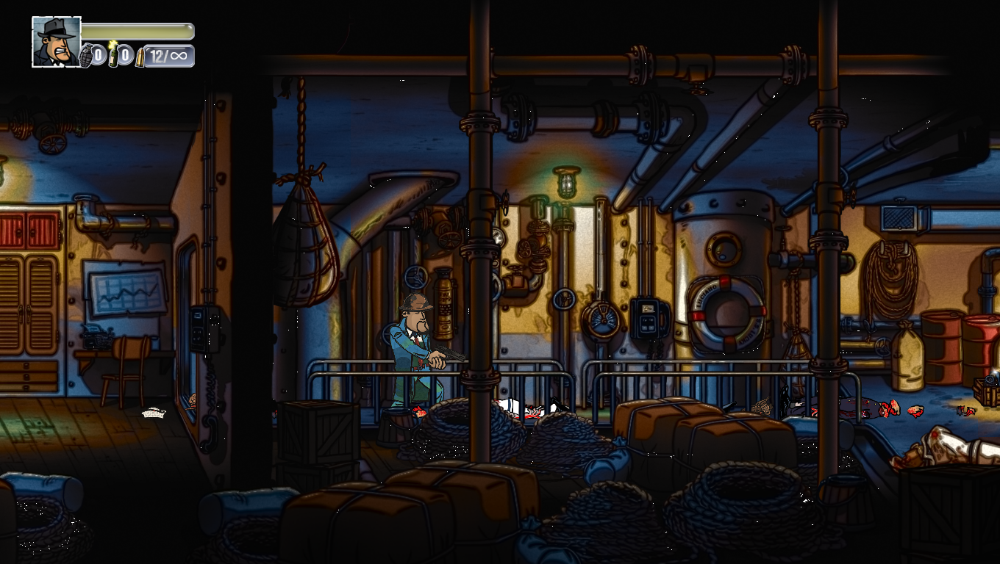
锅炉、压力表、阀门组、盘绳。金属高光与铜绿的最集中处。
05_engine/L3_05_engine_01_boiler.png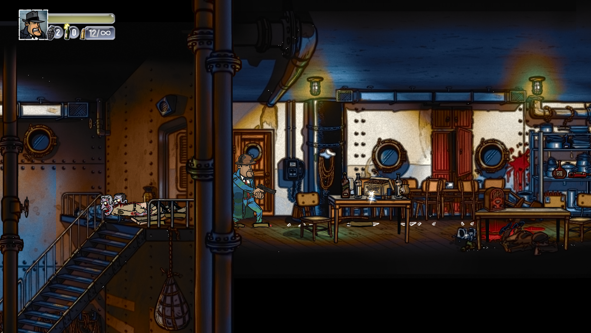
左侧钢梯通往上层，右侧长餐桌与舷窗。两个空间的光比对照。
05_engine/L3_05_engine_02_stairs_mess.pngL3_，但拍摄时人在暴徒镇港口 / 市郊。留在 L3 集合里会让后面所有对比失真，已移到 art/scene_shots/L4_L5_harbour/。其中红砖码头那张的砖纹就是 Quay_05 —— 已被 L3/L4/L5 共用，这正是「共享纹理必须整组推进」那条规则的实物证据。| 文件 | 内容 | 推定关卡 | 备注 |
|---|---|---|---|
harbour_01_ship_gangway.png | 船舷外壁 · 跳板 | 推定 L4 暴徒镇港口 | 深蓝铆钉船壳、救生圈、黄色舷灯。 |
harbour_02_brick_quay.png | 红砖码头 · 系船柱 | 推定 L4 暴徒镇港口 | 砖墙纹理即 Quay_05，已确认为重绘后状态。 |
harbour_03_fuel_oil_yard.png | FUEL OIL 罐车区 | 推定 L5 市郊 | 1926 年式油罐车、蒸汽船驾驶室。 |
art/scene_shots/_analysis/，不要和实机截图混在一起。ingame_now.png（早期实机帧）、_brick_3way.png（Quay_05 三方对比）、_quay05_cmp.png（Quay_05 重绘对比）、_zoom_left.png（左半细节）、_zoom_left_tank.png（左侧储罐细节）、_zoom_right.png（右半细节）、_zoom_right_crane.png（右侧吊车细节）、_zoom_sky.png（天空细节）